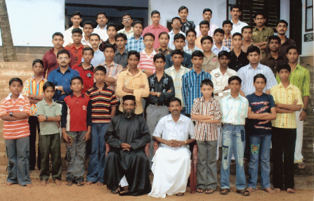

ORGANIZATIONS
There are a lot of spiritual organizations working under the church aimed at the social and spiritual well being of the community. To view the details of each organization, its members, governing body and activities, please click the appropriate button in the below tab.
SUNDAY SCHOOL
Sunday schools have been the most important of all the spiritual organizations of the church. Our church has a unit of Sunday school from the day this organization was started by Malankara Syrian Orthodox Church. There have been many people who has done outstanding contributions for the growth of Sunday schools in the church. M. C. Chacko Malieckal, V. T Idukula Valloorikkal, K. E. Geevarghese Kadavupadikal has been associated with the Sunday schools for around 60 years. For their meritorious services they have been presented awards by the Catholicose of the East.
Currently there are four Sunday schools working effectively under the church.
M. G. M SUNDAY SCHOOL, KALLOOPPARA
 This is the main Sunday school of the church and its functions in the church itself. It is named after His Holiness Geevarghese Mar Gregorious of Parumala. Around 300 students are studying in this Sunday school. Students of this Sunday school have always done well in competitive exams and other co-curricular activities. His Grace Jacob Mar Iraneus, Rev. Fr. P. Thomas, Rev. Fr. K. V. Thomas, Rev. Fr. P. K. Geevarghese, Rev. Fr. K. Y. Wilson and Rev. Fr. James Kuttikandathil were former students of this Sunday school.
KAVANAL SUNDAY SCHOOL
This is the second Sunday school of the church formed in the year 1939. The children from Kavanal, Puramattom and Madathumbhagom are attending classes here
Head Master - Mr. K. E. Geevarughese, Kadavupadikkal.
M. G. M SUNDAY SCHOOL, MADATHUMBHAGOM
This is the third sunday school of the church and was formed in the year 1955 in memory of His Holiness Geevarghese Mar Gregorious of Parumala. Rev. Fr. Geevarghese Panicker was the one who lead the Sunday school in its early days. In early days the Sunday school was conducted in a temporary shed and in 1978 acquired a permanent building. Then in 1999 with the able leadership of Rev. Fr. C. K. Kurien and Mr. K. C. Chacko, Kottapalathunkal a new building has been constructed for the Sunday school. Currently there are around 12 teachers and 60 students in this Sunday school
Head Master- Mr. M. C. Chacko, Maliyekkamalayil.
ST. GREGORIOUS SUNDAY SCHOOL, IKERAPPADI
This is the fourth sunday school of the church and was formed in the year 1991. The sunday school is conducted in the building donated to the church by Mr. C. M. Alexander, Choorakuzhiyil. The foundation stone for the Sunday school building was laid on 21st March 1990 by His Grace Dr. Geevarghese Mar Osthathios and the building was inaugurated on 10th March 1991 by Rev. Fr. M. C. Jacob, Munduplackamannil and Rev. Fr. P. Thomas, Plakottu. The students from Puthussery, Ikerapadi, Madathumbhagom, Muttathukonam are attending classes here. From 1998 a library for the students has also been opened.
Head Master - Mr. Mathew Alex, Choorakuzhiyil.
YOUTH LEAGUE
Youth leagues have always been the most active organization in the church. The Youth league has always shown a lot of commitment towards the society, a lot of charity services and material helps has been extended to both the church members and the community as a whole.Youth leagues have also got a major part in bringing up the extra curricular qualities in the youth. Also various steps has been taken to promote budding talents in the areas of singing, painting, drawing, speech etc.
Mainly there are three youth leagues working under the church.
ST. THOMAS YOUTH MOVEMENT, KALLOOPPARA
- This is the oldest and the parent unit of all the youth movements in the church. This unit is around 70 years old and was in existence even before the Youth Movements were officially started in Malankar Sabha. It has always given prime importance to the spiritual and social upliftment of the society.
Chandy Thomas Kottackal, Ummachan Kondoor, M. C. Mathai Mundupalathinkal, Geeevarchen Edayanattu, Kunjootti Meprathu, Paappan Padinjaremuriyil etc were the people who started this unit in 1930. The then vicar Rev. Fr. Bahanan (Thalavady) and assistant vicar Rev. Fr. Skarai Madathil (Niranam) gave all the support and blessings needed for the organization.
Many members of this youth league has occupied various posts in Malankara Sabha. A. T. Thomas Azhakanaparayil, K. C. Thomaskutty Kavanakuzhiyil, K. E. Abraham Kuttisseril etc. has been the diocese secretaries of the youth league. Rev. Fr. K. Y. Wilson has served as the central general secretary. The president of the youth movements His Grace Jacob Mar Iraneus also belonged to this youth league.
Every year on Christmas eve the youth leagues conducts dramas based on a biblical topic or a topic of social importance. The youth league also has got a coir service which can be hired for marriage functions.
President - Rev. Fr. Koshi Philip Vice President - Georgy Joseph Secretary - Gigu IssacST. GREGORIOS YOUTH MOVEMENT, AIKKARAPADI
This is the second unit of youth movement in the church. Worship, study and service are its main motto. This youth league was formed in 1970 and members from Ikerapadi, Puthusserry, Muttathukonam, Madathumbhagom etc attended the meetings. Every Saturday at 7 PM the meetings are held at the house of one of the members of the movement.
This youth league has organized a fund for helping the economically backward. The fund was inaugurated by His Grace Geevarghese Mar Osthathios on 28th February 1999. The honorable M.L.A of Kallooppara, Mr. Joseph M Puthussery was a member of this youth league.
Secretary - Deepu Aikkara
ST. MARY'S YOUTH MOVEMENT, PURAMATTOM
This is the third unit of youth movements in the church started in the year 1983. Every Saturday the meetings are held in the Sunday school building at Madathumbhagom. Helping the poor, organizing charity activities, guiding the youth etc are its main objectives
Secretary - Suni Philip
M.G.O.C.S.M
A unit of M.G.O.C.S.M is also working under our church. Seminars and other study classes are being conducted to give proper guidance to the youth.
Dr. K. E. Abraham is serving as the diocese secretary of M.G.O.C.S.M.
MARTHA MARIYAM SAMAJAM
Martha Mariam Samajams has been functioning in the church for the past 80 years. In the beginning there were many units functioning in different parts of the parish. Then during the period 1996 to 1997 all those units were unified and three groups were formed. They are Kallooppara, Ikerapadi and Madathumbhagom groups. Their main focus is on bible study and charity works. Every Saturday the members of all the units will join in the church.
MARTHA MARIAM SAMAJAM, KALLOOPPARA
-  This unit was started in 1920 and is the oldest of the Samajam's in the church. The members of the Samajam will get together every Saturday at 2.30 pm on any of the member's house.
Mrs. Ammini Alex, Kochuparackal of this Samajam is serving as the District Secretary.
In the competitive examination conducted in Niranam diocese, in the super senior division Mrs. Mariamma Cherian, Azhakanaparayil, and in senior division Mrs. Omana Mathai, Rinu bhavan, has won the first prize.
This unit was started in 1920 and is the oldest of the Samajam's in the church. The members of the Samajam will get together every Saturday at 2.30 pm on any of the member's house.
Mrs. Ammini Alex, Kochuparackal of this Samajam is serving as the District Secretary.
In the competitive examination conducted in Niranam diocese, in the super senior division Mrs. Mariamma Cherian, Azhakanaparayil, and in senior division Mrs. Omana Mathai, Rinu bhavan, has won the first prize.
MARTHA MARIAM SAMAJAM, IKERAPADY
This unit was started in 1990 and the meetings are held on every wednesday at 10 am on any one of the member's house.
MARTHA MARIAM SAMAJAM, MADATHUMBHAGOM
This unit was started in 1969 and the meetings are held on every wednesday at 10 am on any of the member's house
PRAYER GROUPS
There is no evidence as to when the prayer groups of the church has been formed. But it is firmly believed that the prayer groups existed from the start of the 20th century. To make the functioning of the prayer groups more efficient, the prayer groups were divided according to their wards. Currently there are 14 prayer groups effectively functioning under the church and their main aim is to organize and lead the spiritual activities of the church and to ensure the unity and harmony among the families belonging to church.
The 14 prayer groups of the church are
Kalloorkara Prayer Group
St Mary's Paryer Group, Chakombhagom West
M. G. M Prayer Group, Chakombhagom South
St. Gregorious Prayer Group, Azhakanappara
St. Basil Prayer Group, Market Junction
St Mary's Prayer Group, Chakombhagom East
St. George Prayer Group, Yakshimannathu
St. Gregorious Prayer Group, Vallonthara,
St Mary's Prayer Group, Ikerapady
Kavanal Prayer Group
St Mary's Prayer Group, Madathumbhagom South
Kadamankulam Prayer Group
Madathumbhagom North Prayer Group
M. G. M Prayer Group, Madathumbhagom Thekkekara
Mr. Mathew Alex, Choorakuzhiyil, is the General Secretary of the prayer groups.
O.V.B.S
The foundation for O.V.B.S in the church was laid by the then seminary student Rev. Fr. K. V. Thomas Kochuparackal, by arranging bible classes during the mid summer vacation in 1972. First classes were conducted for students residing near to the church. Then in 1975 the classes were conducted in M.G.D. High School, Puthussery named as the Kallooppara unit. For the first three years classes were conducted only for a week and book published by C.S.S were used for the classes. Then in later years the duration was extended to 10 days. Kallooppara, Kadamankulam, Changaroor, Vallamal, Madathumbhagom churches participated in the classes. As the number of students increased it became impossible to conduct classes in a single unit. So in 1983 two units were formed, one at our church and the other at St George Orthodox Church, Chengaroor.
Today around 300 students are participating in Kallooppara unit. The ever increasing number of students attending O.V.B.S in the church is an example of the dedication shown by the church members towards O.V.B.S.